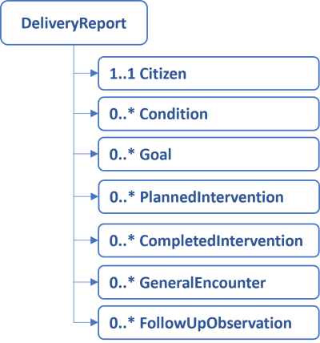
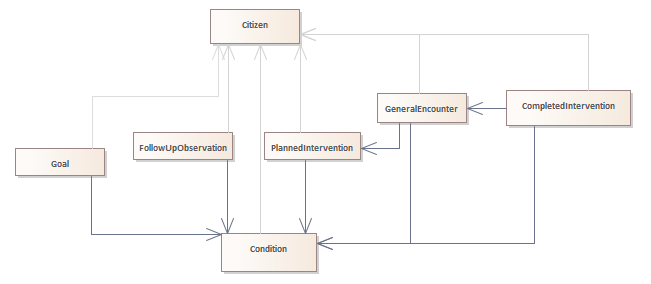

1.2.0 - release
1.2.0 - release
This page is part of the KL Gateway (v1.2.0: Release) based on FHIR (HL7® FHIR® Standard) R4. This is the current published version in its permanent home (it will always be available at this URL). For a full list of available versions, see the Directory of published versions
| Official URL: http://fhir.kl.dk/gateway/ImplementationGuide/kl.dk.fhir.gateway | Version: 1.2.0 | |||
| Active as of 2024-10-31 | Computable Name: KLGateway | |||
This implementation guide describes the delivery of health and eldercare data to FK Gateway. The reporting aims for compliance with the Danish core profiles and the current work on a shared information model (FKI) for data in the Danish municipalities.
The profiles for the reporting are restricted to allow only the information that is required to report to the FK Gateway. This is only a subset of information described in FSIII and FKI.
Note that this is a transitional version, designed to allow a smooth implementation of the FSIII simplicfication. This front page now describes the reporting, as it will look after the simplification, but the old way is still possible, and is described on the page "Old home". Be aware, that it is also possible, to report to FK Gateway using a hybrid of old and new profiles and terminology. This will help to allow users to still have content in their records that uses the old FSIII, while new content is documented using the simplified FSIII.
The specific changes to the FSIII terminology will not be described here, as they are documented elsewhere, and FK-klassifikation holds the authoritative copy. However, be aware of the following:
Other changes include:
The data is reported as a collection of instances. A report may contain instances that conforms to the profiles defined in this implementation guide. See figure below.

In addition to being structured as a report, relationships exist between the profiles. These are illustrated in the UML Class Diagram in the figure below.

The Class diagram shows that all profiles refer to Citizen. Other than that, the documentation is centered aroung Conditions. The PlannedInterventions and CompletedInterventions can reference the Condition to document why these activities are carried out. A goal (forvented tilstand) always focuses on a certain Condition. A followUpObservation references the Condition which it follow up on. The GeneralEncounter can be used to report a planned follow up date for Conditions, which is mandatory. It can also be used to report the delivery of PlannedInterventions, which is optional.
The content of the DeliveryReport is described in more detail in the following:
Information about the citizen that is the subject of the report. The main information about the citizen is the civil registration number (CPR-nr) and identification of the municipality holding and reporting the data. Information about deceased status is includes as well.
Information about the conditions (FSIII tilstande) of the citizen as assessed by the care practitioners. A condition represents an assessement of either a home care or a nursing condition and it must contain the level 2 condition code as defined by FSIII, the time that it was recorded, and a reference to an encounter with the follow-up date of the condition if it is known. Home care conditions must also contain the severity of the condition represented as the functioning level as defined by FSIII.
All information about conditions that has changed since the last reporting must be contained in a new report. Changes in the assessment may include conditions that are new, updated by a new assessment or no longer is relevant. A condition that has changed since previously reported shall have the same code according to FSIII.
Free text information about the conditions is not part of this reporting.
Note: A potential problem at home care or nursing condition area level is not a condition. Matter of Interest observations are used for this.
Information about the goal (FSIII forventet tilstand) for each home care condition. The goal must contain the condition that the goal addresses and the expected severity as defined by FSIII. Only one goal for a home care condition must exist at a given time.
All changes to the goals since the last reporting must be included in a new report. However, changes typically only include entered-in-error. Other changes are considered to be new goals.
Free text information about the goals is not part of this reporting.
Information about the planned interventions (FSIII indsatser) that the municipality has granted to address the conditions of the citizen. A planned intervention represents one type of care given to the citizen. It must contain the level 2 code for the intervention, the start time, the end time if ended, references to the conditions that the intervention addresses if known.
A citizen may be granted several level 3 interventions for the same level 2 intervention. Level 3 interventions are reported using both the level 2 code and the locally defined level 3 code. Interventions are allowed to be overlapping to support this.
All changes to the planned interventions since the last reporting must be contained in a new report, including conditions referenced by the reported interventions.
Free text information about Planned interventions is not part of this reporting.
Information about completed interventions (FSIII Indsatser) that the municipality has delivered acute or in any other way not as planned interventions. A completed intervention represents one type of care given to the citizen. It must contain the level 2 code for the intervention, references to the conditions the intervention addresses if known, and the start time of the delivery. CompletedIntervention may reference an Encounter, but this is optional.
A completed intervention my be documented as a level 3 intervension. Level 3 interventions are reported using both the level 2 code and the locally defined level 3 code.
All changes to the completed but not planned interventions since the last reporting must be contained in a new report.
Free text information about care plans is not part of this reporting.
GeneralEncounter can be used to report a planned follow-up date for Conditions, which is mandatory. It can also be used to report delivered PlannedInterventions, which is optional. The encounter references the relevant Conditions and PlannedInterventions.
The type of the encounter can be reported as a follow-up or a delivery of an intervention.
The encounter must contain the expected start date or the actual start time.
All referenced encounters from other resources in a report must also be included.
Free text information about encounters is not part of this reporting.
Information about the outcome of a follow-up encounter. The follow-up observations must contain the coding for the outcome (FSIII resultat af opfølgning) and a reference to one or more conditions about which the observation is made.
All changes to the follow-up observations since the last reporting must be included in a new report, including the conditions and interventions referenced by the observations.
Free text information about the follow-up outcome is not part of this reporting.
Reporting is done using the profile KLGatewayCareDeliveryReport, which is a bundle containing multiple resources about one citizen. The source systems must periodically (at least daily) transfer a delivery report containing a snapshot of the current information for each changed citizen with all registrations that has changed since the previous delivery report was transferred. Multiple delivery reports must be delivered if the previous reporting for some reason happened more than one day ago, each covering no more than one day. A full history of changes is not required.
Note, that the snapshot of the current information contains information about the hole day, not only the current state for the citizen. An intervention that fx has ended during the day shall therefore be included in the report with an end date and time along with possible new interventions.
The id of any resource must be universally unique, e.g. a uuid. Resources with the same id as previously reported are considered to be an update of the previous reported information at the time indicated in the metadata of the resource. A resource that has been enterered in error is invalidated by an update with the same resource id as previously reported.
All resources must contain the metadata giving the profile and lastUpdated information.
The delivery report is immediately validated when a source system posts it to the gateway. The gateway validates all the rules defined in this profile for each delivery report and returns the list of errors found in the response. The gateway returns a machine readable error code if validation errors are found, and a textual description (not machine readable) of each error which explains the error in terms of the FHIR protocol.
The gateway thus validates that the format of the content is valid, the structure of all resources are correct, the cardinatity of all values are valid, codings only contains valid codes, and that all referenced resources are included in the report. The rules described on this page are validated to the extent possible through more complex constraints in the profiles. The constraints in the profiles also contains a textual description to describe the error when the validation finds that a constraint is not observed. This includes more technical validations not listed above, such as fixed values aligned with the shared information model (FKI) and the FHIR standard in general.
The gateway is not able to validate immediately whether the reported data conflicts with previously reported data. Problems like this will probably not be found until the data is processed for business intelligence or reporting to other recipients. Handling these problems will have to be a manual process. The gateway will for obvious reasons not be able to validate whether all the data from the source systems has been reported, including attributes with zero to one or zero to many cardinality marked as "must support".
The implementation guide contains a number of examples for each profile used in a delivery report. See Delivery report example for an example of a complete delivery report.
Note: Must support markers are used according to the FHIR specification and means that it shall be included in the report if the information is available. A precise definition of what available means in each case is described in the definition of the element.
| IG | Package | FHIR | Comment |
|---|---|---|---|
  KLGateway KLGateway | kl.dk.fhir.gateway#1.2.0 | R4 | |
 HL7 Terminology (THO) HL7 Terminology (THO) | hl7.terminology.r4#6.0.2 | R4 | Automatically added as a dependency - all IGs depend on HL7 Terminology |
| FHIR Extensions Pack | hl7.fhir.uv.extensions.r4#5.1.0 | R4 | Automatically added as a dependency - all IGs depend on the HL7 Extension Pack |
| HL7 FHIR Implementation Guide: DK Core | hl7.fhir.dk.core#3.2.0 | R4 | |
 HL7 Terminology (THO) HL7 Terminology (THO) | hl7.terminology.r4#5.5.0 | R4 | |
 Personal Health Device Implementation Guide Personal Health Device Implementation Guide | hl7.fhir.uv.phd#1.0.0 | R4 | |
 HL7 Terminology (THO) HL7 Terminology (THO) | hl7.terminology.r4#3.1.0 | R4 | |
| KL Terminologi | kl.dk.fhir.term#2.2.0 | R4 |
Package hl7.fhir.uv.extensions.r4#5.1.0 This IG defines the global extensions - the ones defined for everyone. These extensions are always in scope wherever FHIR is being used (built Sat, Apr 27, 2024 18:39+1000+10:00) |
Package hl7.fhir.uv.phd#1.0.0 ImplementationGuide for Personal Health Devices (PHD), used in remote patient monitoring (e.g., weight scales, blood pressure cuffs, glucose monitors, pulse-oximeters, etc.). (built Thu, May 12, 2022 20:20+0000+00:00) |
Package hl7.fhir.dk.core#3.2.0 A FHIR Implementation Guide for the Danish common needs across healthcare sectors (built Mon, May 6, 2024 15:20+0200+02:00) |
This is an R4 IG. None of the features it uses are changed in R4B, so it can be used as is with R4B systems. Packages for both R4 (kl.dk.fhir.gateway.r4) and R4B (kl.dk.fhir.gateway.r4b) are available.
There are no Global profiles defined
This publication includes IP covered under the following statements.